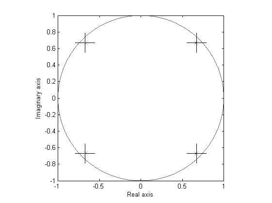

Contents
Example 6: Uncertainty bounds on estimation using first-order variance for PBSIDopt
close all; clear; clc;
The fourth-order LTI model with coloured process noise
% state-space matrices A = [0.67 0.67 0 0; -0.67 0.67 0 0; 0 0 -0.67 -0.67; 0 0 0.67 -0.67]; B = [0.6598 -0.5256; 1.9698 0.4845; 4.3171 -0.4879; -2.6436 -0.3416]; K = [-0.6968 -0.1474; 0.1722 0.5646; 0.6484 -0.4660; -0.9400 0.1032]; C = [-0.3749 0.0751 -0.5225 0.5830; -0.8977 0.7543 0.1159 0.0982]; D = zeros(2); % open-loop system OL = ss(A,[B K],C,[D eye(2)],1);
Open-loop identification experiment
Simulation of the model in open loop
% input signals N = 4000; % number of samples t = (0:N-1)'; % time samples r = randn(N,2); % excitation signal % noise e = randn(N,2); % noise signal % simulation y0 = lsim(OL,[r zeros(N,2)],t); y = lsim(OL,[r e],t); disp('Signal to noise ratio (SNR) (open-loop)') snr(y,y0)
Signal to noise ratio (SNR) (open-loop) ans = 12.1431 7.7604
Identification of the model in open loop
% parameters n = 4; % order of system f = 10; % future window size p = 10; % past window size % PBSID-varx [S,X,VARX,U,Zps] = dordvarx(r,y,f,p); figure, semilogy(S,'*'); x = dmodx(X,n); [Ai,Bi,Ci,Di,Ki] = dx2abcdk(x,r,y,f,p,'nostable');

VARX identification results
Representing the results in the frequency domain
% Frequency grid w = logspace(-2,log10(pi),1000); % Frequency response of identified system Gr = freqresp(OL(1:2,1:4),w); [P,sigma] = dvar4varx(r,y,p,VARX,Zps); [Gi,covG] = dvar2frd(P,w,1,p,VARX); figure('Units','normalized','Position',[0 0 1 1]), dbodemagsd(Gi,covG,2.8,w,1,Gr);
PBSIDopt identification results
Representing the results in the frequency domain
% Frequency response of identified system Gr = freqresp(OL(1:2,1:4),w); [P,sigma] = dvar4abcdk(x,r,y,f,p,Ai,Bi,Ci,Di,Ki,U,Zps); [Gi,covG] = dvar2frd(P,w,1,Ai,Bi,Ci,Di,Ki); figure('Units','normalized','Position',[0 0 1 1]), dbodemagsd(Gi,covG,2.8,w,1,Gr); figure('Units','normalized','Position',[0 0 1 1]), dnyquistsd(Gi,covG,2.8,Gr); % Eigenvalues with ellipse bound [E,covE] = dvar2eig(P,Ai); figure, deigensd(E,covE,2.8,eig(A));